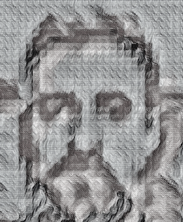

∞ ⋈ ∞ ∞ ⋈ ∞ ∞ ⋈ ∞
Team
Marquard Dirk Pienaar (B.Accounting (Hon), MPhil (Philosophy))
I founded Africahead and currently own the equity:intequity. Am looking for equity and
intequity partners. 48% of the brand value of Africahead will belong to Africahead Ipparts (AFA)
Erc20 token holders. Equity:intequity owners may not hold AFA. I work independently and am
not part of any religious or business group, other than stated here.
During
2018 more than 500 South African voters from varied backgrounds and "races" signed the Deed of
Foundation of Divided Party (DiP), a new political
party in South Africa. 11 Others,
being Executive Body members of the party, signed the constitution of DiP. They are however not
involved with the management of DiP, other than being notified about the Annual General Meeting,
attending it and voting on it.
Africahead is an "'all'-in-'one'" business, because it combines politics and business.